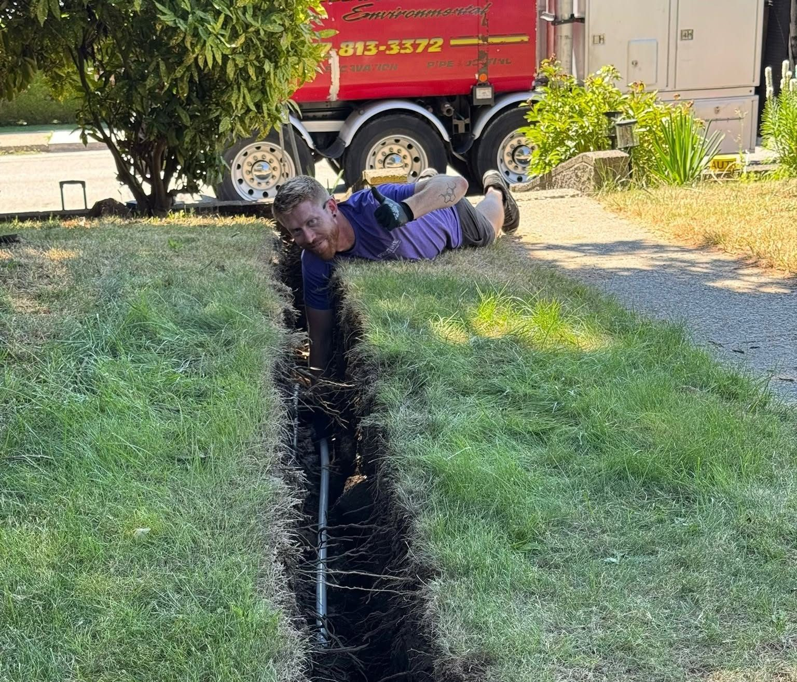
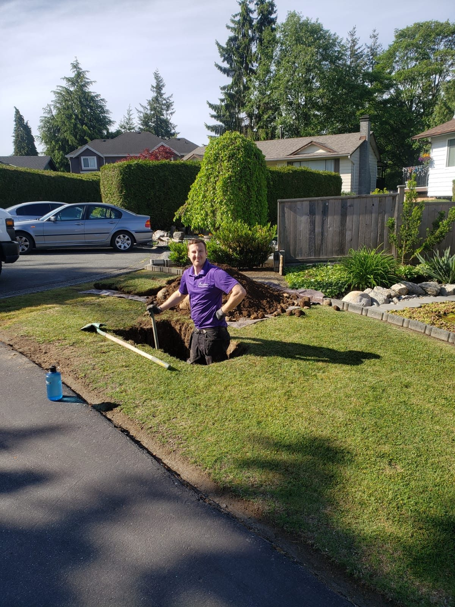
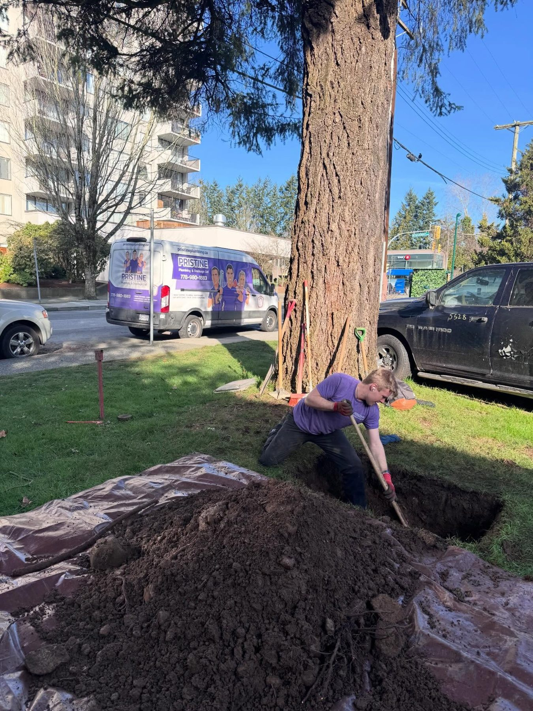
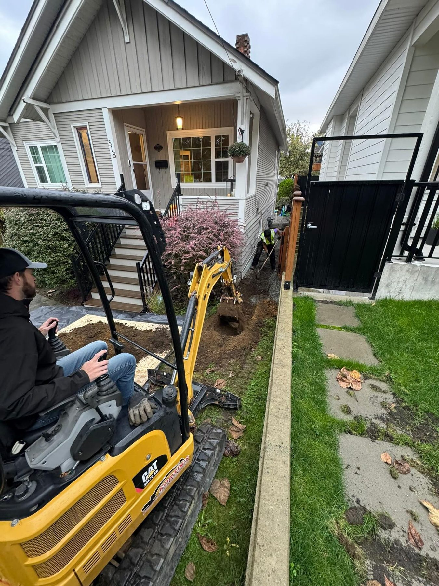

Water lines & repipes · Burnaby & the Lower Mainland
New water lines without tearing up your home
Trenchless water service replacement and Poly-B repipes for 1970s to 1990s homes across the Lower Mainland.

The water service is the underground pipe that brings drinking water from the City main to your house. When it breaks you see a soggy patch in the lawn, water in the yard or a water bill that suddenly doubled. We can usually replace it without digging up the lawn or driveway: two small holes, one at each end, and a new line pulled through.
Inside the house, grey Poly-B pipe was installed in thousands of Lower Mainland homes from the late 1970s to the 1990s. It fails from the inside, usually 10 to 15 years after installation, and many insurers now surcharge or refuse homes that still have it. Check under your sinks, above the hot water tank or in the utility room: grey plastic pipe is Poly-B.
A repipe starts with a walkthrough and an upfront quote with costs and timeline. Where we need to open walls or ceilings, materials are tested for asbestos first and remediated if needed to keep your family and our crew safe. We cut drywall with vacuum-attached cutters to keep dust off your belongings, remove the old pipe and install new.
Price before work starts. Free home plumbing inspection with every call.
Call 778-980-1883 day or night, or send a request and we'll call you back.
From the job
What this work looks like



- 5.0 on Google · 260 reviews
- HomeStars Best of the Best 2025
- BBB A+
- Red Seal journeymen
- Licensed & insured
- Burnaby-based since 2015
Reviews
From people who called about this
Questions
Asked about water service lines & poly-b repipes
How do I know if I have Poly-B?
Look under sinks, above the hot water tank and in the utility room for grey plastic pipe, often with copper or plastic crimp fittings. We'll confirm on a visit.
Will my insurance care?
Many insurers charge higher premiums or decline coverage for homes with Poly-B. A repipe quote is worth having before your renewal.
How much of my home gets opened up?
As little as possible. We plan access points before starting, test for asbestos, and use vacuum-attached cutters so the dust stays out of your furniture.
Is trenchless always possible?
Most of the time. Where it isn't, we excavate as little as possible, sometimes with a vacuum truck to protect trees and concrete, and tell you before we start.
Related
Often booked together
Ready when you are, 24/7
Burnaby, New Westminster, Coquitlam, Port Moody, Vancouver, Surrey and Bowen Island.